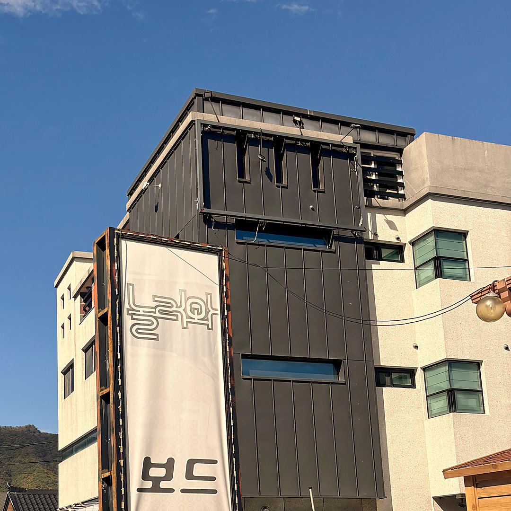
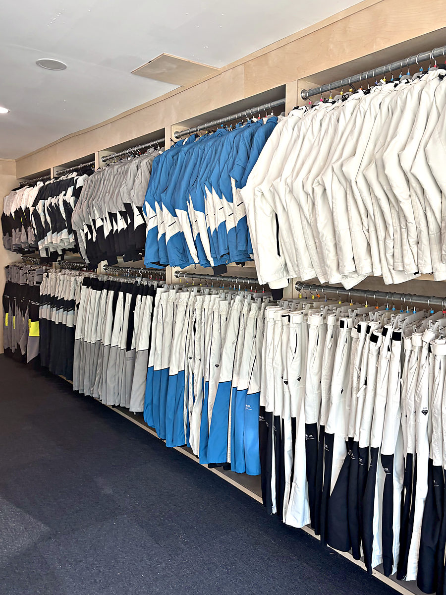
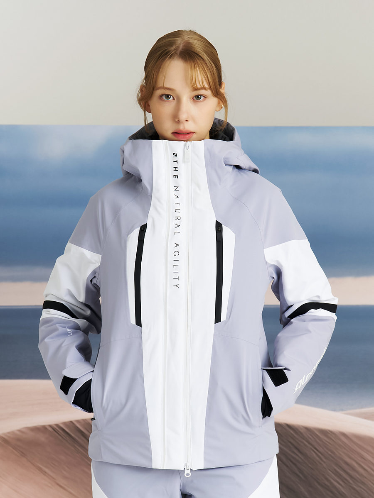

Travel Guide · 2026/27 시즌
무주리조트 셔틀버스 시간표와 가는 법 (2026/27)

무주덕유산리조트 무료 셔틀버스는 무주공용버스터미널 맞은편 무주관광안내소 위 P1 주차장에서 05:00·07:20·10:30·16:30, 하루 4회 출발합니다. 리조트에서 돌아오는 셔틀은 09:30·15:30·18:30·21:10에 출발하고, 막차는 P1 주차장에 22:07 도착합니다. 15인승이라 자리가 차면 탈 수 없으니 여유 있게 나가세요.
- 요금무료
- 리조트 가는 편하루 4회
- 리조트 나오는 편하루 4회
- 차량15인승
시간표와 탑승 위치는 무주덕유산리조트 공식 셔틀버스 안내에 2026년 9월 1일부터 적용된 표를 기준으로 정리했습니다. 셔틀은 예고 없이 늦어지거나 운행하지 않을 수 있으니, 출발 전에 리조트 셔틀 문의처(063-320-7113)로 한 번 더 확인하세요.
무주리조트 셔틀버스는 어디서 타나요?
무주읍에서는 무주관광안내소 위 P1 주차장에서 탑니다. 대한민국 정책브리핑 안내처럼 무주관광안내소(무주읍 한풍루로 344)는 무주공용버스터미널(한풍루로 351) 맞은편에 있습니다. 시외버스로 무주터미널에 내렸다면 길을 건너 셔틀을 타면 됩니다.
| 구분 | 탑승 위치 |
|---|---|
| 무주읍 (05:00·07:20·10:30편) | 무주관광안내소 위 P1 주차장, 산림조합 앞 |
| 무주읍 (16:30편) | 무주관광안내소 위 P1 주차장 |
| 설천면 | 설천면소재지 사거리, 면사무소 앞 |
| 구천동 | 관리공단 아래 주차장, 삼공리(이용원 맞은편), 보안리(민약건강원 앞), 배방리(생두부촌 앞) |
| 리조트에서 돌아갈 때 | 만선하우스 탑승장, 티롤사거리, 설천하우스 탑승장, 웰컴센터 뒤(조각공원 앞) |
리조트 가는 셔틀은 몇 시에 있나요?
무주관광안내소 P1 주차장에서 출발해 산림조합, 설천면사무소, 구천동(터미널 앞 밑 하단 주차장)을 거쳐 리조트에 도착합니다. 처음부터 끝까지 약 55분 걸립니다.
| P1 출발 | 산림조합 | 설천면 | 구천동 | 리조트 도착 |
|---|---|---|---|---|
| 05:00 | 05:02 | 05:20 | 05:40 | 05:55 |
| 07:20 | 07:22 | 07:45 | 08:05 | 08:20 |
| 10:30 | 10:32 | 10:50 | 11:10 | 11:25 |
| 16:30 | - | - | - | 17:00 |
주간 스키를 처음부터 타려면 07:20편이 가장 잘 맞습니다. 08:20에 도착하면 08:00에 문을 여는 무주놀러와스키샵에서 렌탈을 받고 09:00 주간 운영 시작에 맞출 수 있습니다. 16:30편은 중간 정류장 시각 없이 17:00 도착으로 안내되어 있어 야간 스키(18:30~22:00)를 타러 갈 때 맞습니다.
리조트에서 나오는 셔틀과 막차는 몇 시인가요?
리조트에서 출발해 구천동, 설천면사무소, 산림조합을 거쳐 무주관광안내소 P1 주차장에 도착합니다. 막차는 21:10 출발입니다.
| 리조트 출발 | 구천동 | 설천면 | 산림조합 | P1 도착 |
|---|---|---|---|---|
| 09:30 | 09:45 | - | - | 10:15 |
| 15:30 | 15:45 | 16:05 | 16:22 | 16:25 |
| 18:30 | 18:45 | 19:05 | 19:22 | 19:25 |
| 21:10 | 21:25 | 21:45 | 22:05 | 22:07 |
막차 시간을 꼭 확인하세요. 야간 운영은 22:00까지지만 마지막 셔틀은 21:10에 출발합니다. 셔틀로 돌아갈 계획이라면 21시 전에 장비를 반납하고 탑승장으로 이동해야 합니다.
셔틀 이용 규칙, 무엇을 알아야 하나요?
정말 무료인가요?
네, 리조트 셔틀은 무료로 운행합니다. 다만 공식 안내에 따르면 예고 없이 늦어지거나 운행하지 않을 수 있습니다.
자리가 없으면 어떻게 되나요?
셔틀은 15인승 쏠라티로 운행해서 좌석이 부족하면 안전을 위해 탑승을 거절할 수 있다고 안내되어 있습니다. 타지 못할 때를 대비해 무주터미널에서 택시로 약 20분 걸린다는 점도 알아 두세요.
중간 정류장에서 내리거나 탈 수 있나요?
무주읍에서 출발한 셔틀은 중간 정류장에서 내릴 수 없고, 리조트에서 출발한 셔틀은 중간 정류장에서 탈 수 없습니다. 갈 때는 중간 정류장에서 타기만, 돌아올 때는 내리기만 한다고 기억하면 쉽습니다.
돌아오는 셔틀이 설천면을 지나지 않을 때도 있나요?
네. 리조트에서 출발할 때 설천면 방향 승객이 없으면 중간 정류장을 거치지 않고 괴목리를 지나 무주읍 P1 주차장으로 바로 갑니다.
리조트 안에서 이동하는 셔틀도 있나요?
리조트 단지 안을 도는 셔틀은 겨울 시즌에만 운행합니다. 노선도는 공식 셔틀 안내의 '리조트 단지내' 탭에서 볼 수 있고, 문의처는 063-320-7113, 7196입니다.
셔틀로 당일 스키 일정을 어떻게 짜나요?
무주터미널에서 셔틀로 오가는 당일 일정 예시입니다. 리조트 운영 시간(주간 09:00~16:30, 야간 18:30~22:00)과 셔틀 시간표를 맞춰 만들었습니다.
- 07:20 무주관광안내소 위 P1 주차장에서 셔틀 탑승
무주터미널 맞은편입니다. 산림조합 앞에서도 탈 수 있습니다. - 08:20 리조트 도착, 렌탈 받기
매장은 08:00에 문을 엽니다. 예약할 때 방문 시간을 적어 두면 도착해서 사이즈만 맞추면 됩니다. 장갑·양말이 없으면 매장에서 사세요. - 09:00 주간 스키 시작
6시간권이면 오후 3시 무렵까지 탑니다. 시간권 요금은 리프트권 할인 안내에서 비교하세요. - 15:30 리조트 출발 셔틀로 귀가
무주관광안내소 P1 주차장에 16:25 도착합니다. 이 차를 놓치면 다음 셔틀은 18:30입니다. - 야간까지 탄다면 21:10 막차
16:30편으로 들어와 야간 스키를 타고, 21:10 셔틀을 타면 P1 주차장에 22:07 도착합니다.
주간을 16:30까지 꽉 채워 타면 15:30 셔틀을 놓치고 다음 셔틀까지 2시간을 기다려야 합니다. 셔틀로 오가는 날은 하루 종일 타기보다 시간권으로 끝나는 시간을 정해 두는 편이 편합니다.
무주터미널까지는 어떻게 가나요?
대부분의 지역은 무주공용버스터미널까지 간 뒤 셔틀이나 택시로 리조트에 갑니다. 리조트 공식 교통 안내의 대중교통 경로는 아래와 같습니다.
| 출발 지역 | 무주터미널까지 |
|---|---|
| 서울 | 남부터미널 → 무주터미널 약 2시간 30분 / 강남터미널 → 대전복합터미널 약 1시간 50분 → 무주 50분 |
| 서울 (기차) | 서울역 → 대전역 KTX 약 1시간, 대전복합터미널 → 무주 50분 / 서울역 → 영동역 약 2시간 30분, 영동터미널 → 무주 40분 |
| 대전 | 대전복합터미널 → 무주터미널 50분 |
| 대구 | 서대구터미널 → 대전복합터미널 약 2시간 20분 → 무주 50분 |
| 부산 | 부산터미널 → 대전복합터미널 약 3시간 10분 → 무주 50분 / 부산역 → 대전역 KTX 약 1시간 30분 |
| 광주 | 광주터미널 → 무주터미널 약 3시간 30분 |
| 전주 | 전주터미널 → 무주터미널 약 1시간 50분~2시간 30분 |
무주터미널에서 리조트까지는 택시로 약 20분, 시외버스로 약 50분(배방삼거리에서 내려 택시 이용)이 걸립니다. 시간이 맞으면 맞은편 무료 셔틀이 가장 저렴합니다. 청주·울산·창원·천안처럼 공식 경로에 없는 지역은 출발일 기준으로 무주행 또는 대전행 버스를 터미널에서 확인하세요.
지역별 제휴 스키버스는 어떻게 이용하나요?
리조트가 안내하는 제휴 버스는 지역 여행사가 운영하는 스키버스입니다. 무주터미널을 거치지 않고 리조트까지 바로 와서 짐이 많을 때 편합니다.
- 1. 운행 여부 확인 후 예약
예약은 필수입니다. 원하는 날짜에 운행하는지 먼저 확인하세요. - 2. 편도·왕복·패키지 중 결제
업체마다 상품 구성이 다릅니다. - 3. 지정 장소에서 탑승, 설천하우스에서 하차
리조트에 도착하면 설천하우스에서 내립니다. - 4. 편도로 돌아갈 때는 잔여석 확인
남은 좌석을 확인하고 출발 10분 전까지 탑승합니다.
| 출발 지역 | 운영사 | 연락처 |
|---|---|---|
| 부산 | 새부산관광 | 051-851-0600 |
| 창원 | 그린고속관광 | 055-264-5700 |
| 진주 | 진주무주테마여행사 | 055-747-3266 |
| 대구 | 무궁화관광 | 053-422-5555 |
| 대전 | 금남관광 | 042-252-7780 |
| 보령·계룡·세종 | 통일관광 | 041-931-2222 |
| 아산·천안 | 미르여행사 | 042-471-0970 |
| 광주 | 광남고속관광 | 062-573-6100 |
| 광주 | 뉴남광여행 | 062-943-4885 |
| 목포·무안·함평 | K2캠프여행사 | 061-285-0503 |
| 여수·순천·광양 | 투어포스트 | 061-723-9119 |
| 군산·익산·전주 | 무주레져투어 | 063-231-8801 |
목록에 있다고 매일 운행하는 것은 아닙니다. 출발 날짜의 운행 여부, 탑승 장소, 출발 시각, 예약 마감일을 업체에 전화로 확인하세요. 청주·울산 출발 업체는 현재 공식 목록에 없습니다.
리조트에 내린 뒤 매장까지는 어떻게 가나요?
무주놀러와스키샵은 덕유산리조트 정문 앞(구천동로 1050)에 있습니다. 셔틀이나 제휴 스키버스로 리조트 근처에 내렸다면 전화(010-9616-3421)나 카카오톡으로 연락하세요. 리조트 근처는 매장에서 픽업해 드립니다. 자가용으로 오면 매장에 무료로 주차할 수 있고, 매장은 08:00부터 24:00까지 운영합니다.
셔틀·버스로 오면 짐은 어떻게 하나요?
스키복과 장비를 들고 버스를 갈아타는 게 가장 힘듭니다. 무주놀러와스키샵에서는 옷과 장비를 모두 빌릴 수 있어 가벼운 차림으로 오시면 됩니다. 26/27 시즌 신상 스키복을 직접 보고 고를 수 있고, 위생상 대여하지 않는 장갑·양말은 매장에서 살 수 있습니다.




- 리조트 정문 바로 앞구천동로 1050, 덕유산리조트 정문 앞에서 장비를 받고 곧장 슬로프로 갑니다.
- 풀세트 40,000원장비·의류·헬멧·고글을 한 번에 빌리는 오픈 한정가입니다.
- 슬로프 앞 무료 배달예약할 때 픽업 장소를 남기면 장비를 슬로프 앞까지 가져다드립니다.
- 리프트권 13,000~25,000원 할인3·4·6시간권을 렌탈과 함께 예약하면 할인가가 바로 적용됩니다.
- 리조트 근처 픽업셔틀·버스로 리조트 근처에 내리면 연락 주세요. 매장에서 데리러 갑니다.
- 무료 주차 · 08:00~24:00 운영자가용으로 와도 주차 걱정이 없고, 아침부터 자정까지 문을 엽니다.
자주 묻는 질문
무주리조트 셔틀버스는 어디서 타나요?
무주읍에서는 무주공용버스터미널 맞은편 무주관광안내소 위 P1 주차장에서 탑니다. 05:00·07:20·10:30편은 산림조합 앞에서도 탈 수 있고, 설천면과 구천동 정류장에서도 탈 수 있습니다.
무주리조트 셔틀버스는 유료인가요?
무료입니다. 다만 15인승 차량이라 좌석이 부족하면 탑승이 거절될 수 있고, 예고 없이 늦어지거나 운행하지 않을 수 있습니다. 문의는 063-320-7113입니다.
리조트에서 나오는 셔틀 막차는 몇 시인가요?
2026년 9월 1일부터 적용된 공식 시간표 기준으로 리조트 출발 막차는 21:10이고, 무주관광안내소 P1 주차장에 22:07 도착합니다.
셔틀 중간 정류장에서 내리거나 탈 수 있나요?
무주읍에서 출발한 셔틀은 중간 정류장에서 내릴 수 없고, 리조트에서 출발한 셔틀은 중간 정류장에서 탈 수 없습니다.
지역 제휴 스키버스는 어떻게 예약하나요?
리조트 공식 제휴버스 안내에 나온 지역 업체에 전화해 운행 여부를 확인하고 예약합니다. 예약은 필수이고, 리조트에 도착하면 설천하우스에서 내립니다.
짐 없이 가도 되나요?
네. 무주놀러와스키샵에서 장비·의류·헬멧·고글을 풀세트 40,000원에 빌릴 수 있고, 장갑·양말·핫팩은 매장에서 살 수 있습니다.
셔틀이나 버스로 가면 매장까지 픽업해 주나요?
네. 리조트 근처에 내렸다면 전화(010-9616-3421)나 카카오톡으로 연락하세요. 무주놀러와스키샵에서 픽업해 드립니다. 자가용으로 오면 매장에 무료로 주차할 수 있습니다.